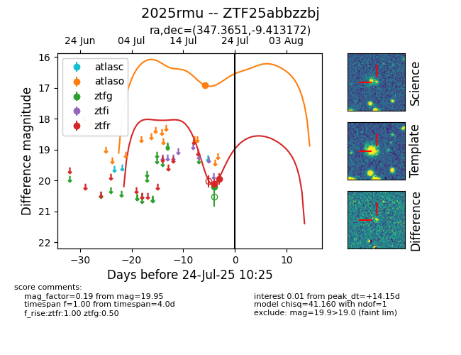

Target 2025rmu at 2025-08-06 17:27, see:
FINK: fink-portal.org/2025rmu
Lasair: lasair-ztf.lsst.ac.uk/objects/2025rmu
ALeRCE: alerce.online/object/2025rmu
TNS: wis-tns.org/object/2025rmu
YSE: ziggy.ucolick.org/yse/transient_detail/2025rmu
alt names
ZTF25abbzzbj (ztf,fink)
2025rmu (tns,yse)
PS25fmf (panstarrs)
coordinates:
equatorial (ra, dec) = (347.3651,-9.41317)
galactic (l, b) = (64.4584,-60.12197)
photometry
last atlaso=16.91, ztfg=20.19, ztfr=20.38
1 atlaso, 1 ztfg, 8 ztfr detections
